| About IR |
| Editors |
| Author instructions |
| Copyright |
| Author index |
| Subject index |
| Search |
| Reviews |
| Register |
| Home |

Volume 3 No 1 July 1997
Information Research: an electronic journal, is published four
times a year by Professor T.D. Wilson of the Department of Information Studies, University of
Sheffield.
ISSN 1368-1613
Contents
 Editorial
Editorial
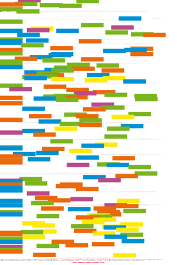The 2nd International Symposium on Networked Learner Support
Sarah Ashton
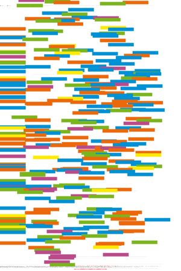Redefining roles: librarians as partners in information literacy education
Helene Williams and Anne Zald
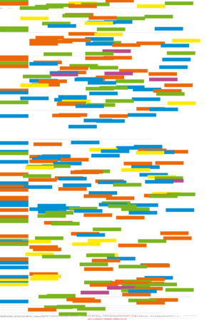Practising the paradigm shift: real world experience of on-line support
Madeleine McPherson
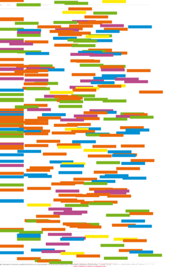Using a NLSI to deliver the Effective Learning Programme: problems and practicalities
Bob Hunter
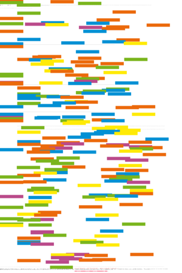Beyond the on-line library - the Learning Environment
Bob Banks
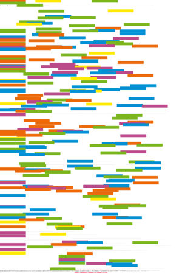The TAPin electronic libraries project and the experience at the University of Birmingham
Tracy K Mulvaney
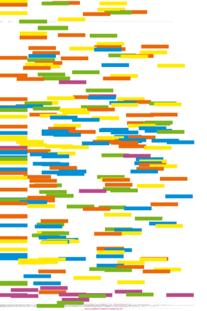The communicative and organisational competencies of the librarian in networked learning support: a comparative analysis of the roles of the facilitator and the librarian
Trine Schreiber and Camilla Moring
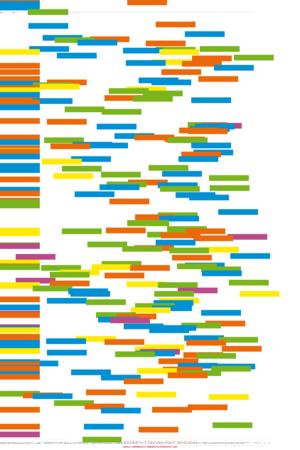Academic partnership in NLS resource design: a European case study
Jo Pye
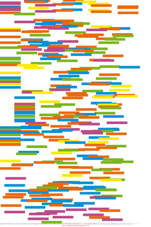Learner support in a distributed learning environment:the use of WWW-based teachware packages
Christian Langenbach and Freimut Bodendorf
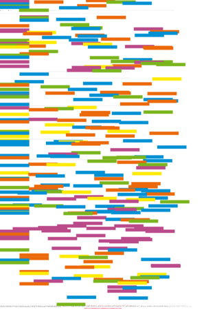Large-scale computer-mediated training for management teachers
Gilly Salmon, Ken Giles & John Allan
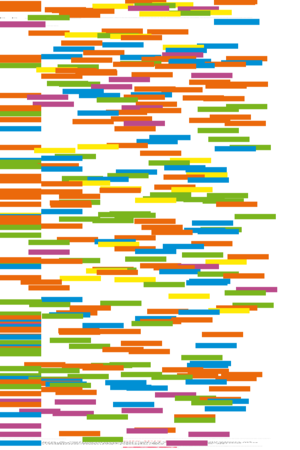Facilitation of on-line learning environments: what works when teaching distance learning computer science students
Tina Wilson and Denise Whitelock
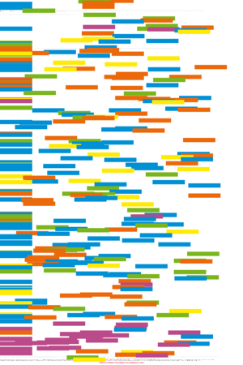Professional learning and the on-line discussion
Michael Hammond
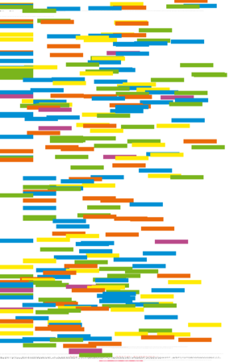Continuing professional development for networked learner support: progress review of research and curriculum design
Philippa Levy
Reviews
If you find Information Research useful, please sign in and we'll notify you of future issues.
Information Research is designed, maintained and published by by Professor Tom Wilson. Design and editorial content © T.D. Wilson, 1995-97